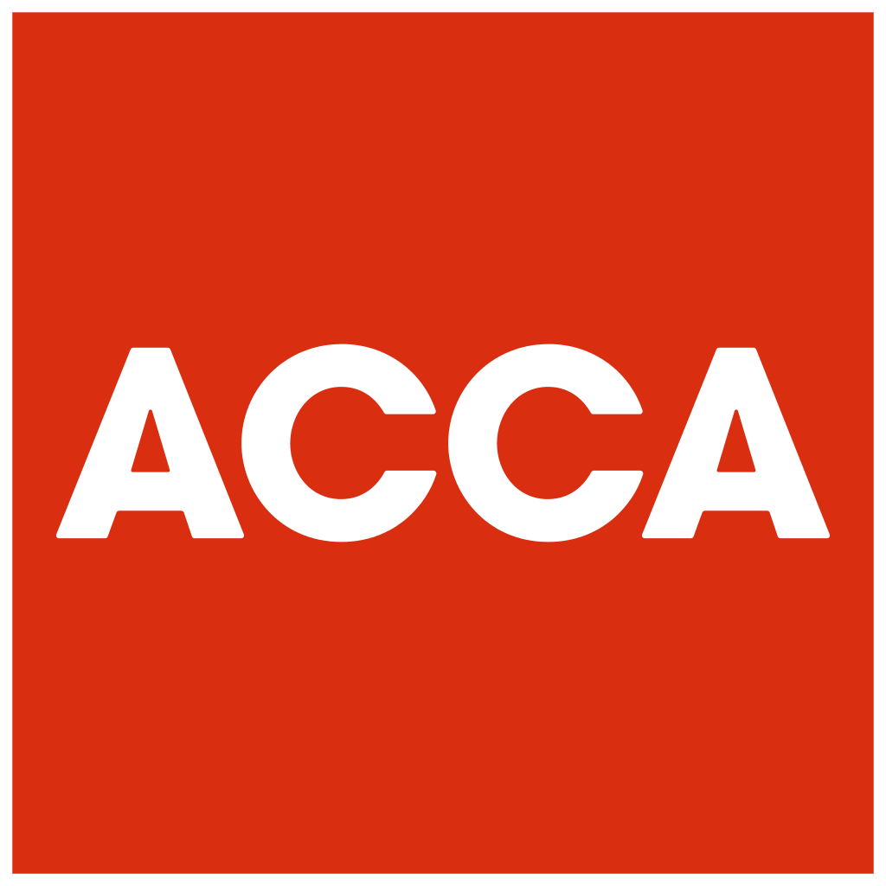
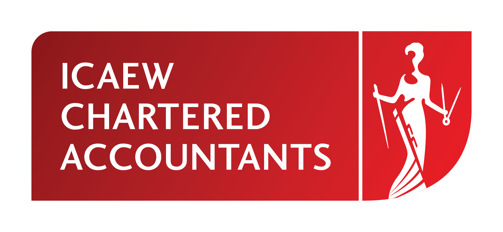

Accreditations to progress your career
We’ve designed the BA (Hons) Accounting and Finance course to ensure that, if you select the relevant module pathway, you’ll be eligible to apply for the maximum exemptions offered by ACCA and for a range of exemptions offered by CIMA, ICAEW and AIA. This means you can achieve membership of your professional body more quickly and accelerate your career progression.
You could choose to pursue other professional accounting qualifications too. Our course gives you the chance to apply for a range of exemptions offered by:
- Chartered Institute of Management Accountants (CIMA)
- Institute of Chartered Accountants in England and Wales (ICAEW)
- Association of International Accountants (AIA)
- CPA Australia

